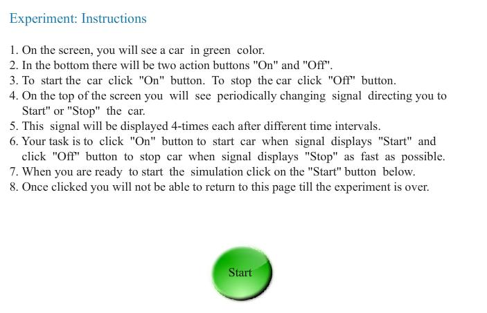
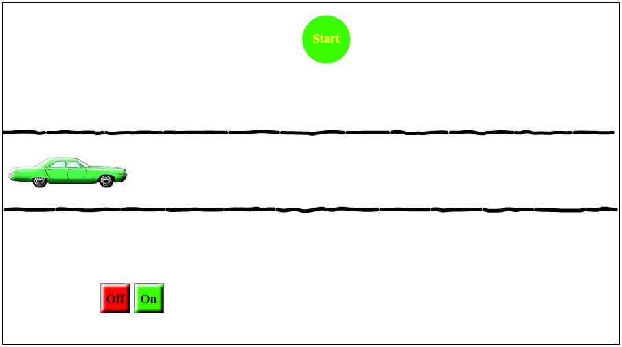
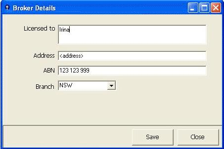
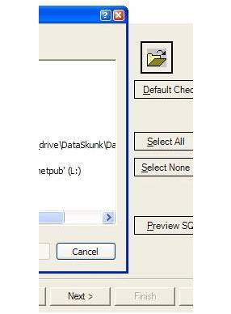
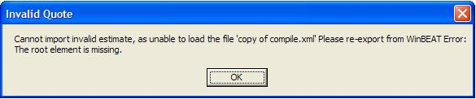

Consistency and Inconsistency in Interaction
Using computers involves a large number of actions on the part of the user which is often performed at a very rapid rate. Actions such as pointing, clicking, dragging, placing have to be done in repeated cycles by the user. This often leads to forming a habit for a given interface environment. If the dialog between the user and the interface consists of random patterns it leads to increase in cognitive load. It is therefore important for interactions to be not only reliable but also consistent across all interfaces constituting a task. Inconsistency leads to unpredictability contributing to inefficiency. Errors could creep in. In this experiment you will experience the need for being alert, attentive and quick in reacting to stimuli from a computer screen. Though the experimental situation and interaction situation is simple the chances of committing errors are still there. On screen where large amount of data need to be interacted with (E.g.: an account sheet containing thousands of individual numbers) making the interface interactions consistent becomes important.
Theo Mandel in his book titled “The Elements of User Interface Design John Wiley & Sons” has written about the principles of consistency as follows :Principles that make the interface consistent
1. Sustain the context of users’ tasks (continuity)
2. Maintain consistency within and across products (experience)
3. Keep interaction results the same (expectations)
4. Provide aesthetic appeal and integrity (attitude)
Consistency in presentation
Consistency in presentation means that users should see information and objects in the same logical, visual, or physical way throughout the product. If static text information is in blue on one screen, then static text on all other screens should also be presented in blue. If a certain type of information is entered using one type of control, then use that same control to capture the same information throughout the product. Don’t change presentation styles within your product for no apparent reason.
Consistency in behaviour
Consistency in behavior means that the way an object works is the same everywhere. The behavior of interface controls such as buttons, lists, and menu items should not change within or between programs. I’ve seen programs where the menu bar choices immediately performed actions, instead of displaying pull-down menus, as everyone expects. Users should not be surprised by object behaviors in the interface.
Ben Shneiderman an American computer scientist at the Human-Computer Interaction Laboratory at the University of Maryland has come up with eight golden rules in which Consistency has also been mentioned. The eight golden rules have been reproduced below.
Shneidermans "Eight Golden Rules of Interface Design"
- 1.Strive for consistency : Consistent sequences of actions should be required in similar situations; identical terminology should be used in prompts, menus, and help screens; and consistent commands should be employed throughout.
2. Enable frequent users to use shortcuts : As the frequency of use increases, so do the users desires to reduce the number of interactions and to increase the pace of interaction. Abbreviations, function keys, hidden commands, and macro facilities are very helpful to an expert user.
3. Offer informative feedback : For every operator action, there should be some system feedback. For frequent and minor actions, the response can be modest, while for infrequent and major actions, the response should be more substantial.
4. Design dialog to yield closure : Sequences of actions should be organized into groups with a beginning, middle, and end. The informative feedback at the completion of a group of actions gives the operators the satisfaction of accomplishment, a sense of relief, the signal to drop contingency plans and options from their minds, and an indication that the way is clear to prepare for the next group of actions.
5. Offer simple error handling : As much as possible, design the system so the user cannot make a serious error. If an error is made, the system should be able to detect the error and offer simple, comprehensible mechanisms for handling the error.
6. Permit easy reversal of actions : This feature relieves anxiety, since the user knows that errors can be undone; it thus encourages exploration of unfamiliar options. The units of reversibility may be a single action, a data entry, or a complete group of actions.
7. Support internal locus of control : Experienced operators strongly desire the sense that they are in charge of the system and that the system responds to their actions. Design the system to make users the initiators of actions rather than the responders.
8. Reduce short-term memory load : The limitation of human information processing in short-term memory requires that displays be kept simple, multiple page displays be consolidated, window-motion frequency be reduced, and sufficient training time be allotted for codes, mnemonics, and sequences of actions.

After performing this experiment
1.You will understand the “principle of consistency” for designing an user interface.2.You will be introduced with conventional rules of consistencies in colors, shapes, actions, labels and screen layouts.
3.You will be able to verify the effects of inconsistencies in interface which cause increase in errors and time taken to perform a task.
Procedure to be followed
- 1.Click on the SIMULATOR tab to proceed to the experiment.
2.You will see the first screen with instructions and start button.(see below).

3.Press the green “Start” button to start the experiment.
4.In next screen you will see a green car, a traffic signal on the top and “ON” and “OFF” bottoms at the bottom.

5. The traffic signal will display “Start” or “Stop” randomly.
6.If signal shows start - you have to start the car by clicking "ON" button.
7.If signal shows stop - you haved to stop the car by clicking "OFF" button.
8.Thus to start the car press "ON" button. To stop the car press "OFF" button.
9.Observe traffic signal carefully. It will display signals 4-times.
10.When you are ready to start the simulation click on the "Start" button.
11.Once you start you will not be able to return back till the experiment is over.
Observe that:
1.Consistency is reflected when Start signal glows in green color and Stop signal glows in red color.2.Inconsistency is reflected when Start signal glows in red color and Stop signal glows in green color.


Q1.How does the princple of 'Strive for consistency’ in UI design affect user satisfaction?
Q2.Illustrate with good user interface design examples : the "principle of consistency" in color, layout, labels and actions.
When a visitor visits your website, you have about 5 seconds of time, during which they need to be able to figure out the purpose of your website and how to use it. If they click a link to another page and have to figure that out all over again, you will annoy them and they will leave!
Consistency applies to the navigation, layout, colors, text formatting and to the way you present information. Your site needs to have a "standard" , by which you do things, so that your site visitors only have to figure out your way of doing things ONCE.
Find out the problems in the following interface designs


Answers
1.Unclear labels on the buttons : the buttons that a user will typically use to close a form should be named consistently across your applications.
We recommend the age-old standards of:
OK: Close the form and save any changed data.Cancel : Close the form without saving.
Close: This should only be displayed if no data has and will be changed in the form's current lifetime.
Apply: Save data without closing the form..
2. Do you have a consistent look on your buttons?
There are three different styles of buttons in the application window shown in this example :
Next Default Window Style
Preview - .NET Flat Style
Cancel - Window XP Style
3. A message box that does not intuitively alert the user. The description should explain what the error was, followed by the why it occurred. Information that is useful for debugging should be included with errors where possible be in a "Details" section. You should also avoid making the text unnecessarily wide.

- Designing the User Interface, 3rd Ed By Ben Shneiderman , Chapters 2, 6.
- Elements of User Interface Design by Theo Mandel, John Wiley and Sons
- http://www.uxmatters.com/mt/archives/2010/07/achieving-and-balancing-consistency-in-user-interface-design.php
- http://www.useit.com/jakob/constbook.html
- http://www.ssw.com.au/ssw/standards/rules/rulestobetterinterfacesedit.aspx